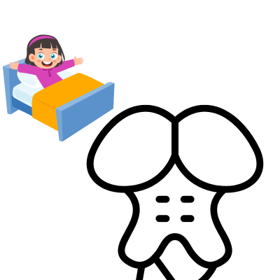

Score: 0 / 0
Organ Systems Overview
Neural Cells
Astrocytes: This cell type is responsible for providing structural support, regulating blood flow, and maintaining the blood-brain barrier.
Microglia: Responsible for immune defense in the CNS
Oligodendrocytes: Myelinate CNS
axons
Schwann Cells: Myelinate PNS axons
and support neuronal regeneration.
Practice Questions
Which nervous system do microglia belong to? Type the letter of the answer: A
A. Central Nervous System
B. Peripheral Nervous System
C. Both
D. Neither
Which nervous system do Schwann cells belong to? Type the letter of the answer: B
A. Central Nervous System
B. Peripheral Nervous System
C. Both
D. Neither
Other than myelination, what is another function of Schwann cells? Type the letter of the answer: C
A. Immune defense
B. Structural support
C. Neuronal regeneration
D. Blood-brain barrier maintenance
Potentials and Neurotransmitters
An action potential is a rapid
change in membrane potential that propagates along the axon of a neuron.
A graded potential is a
localized change in membrane potential that varies in magnitude and can
lead to an action potential if it reaches the threshold.
At resting potential, the inside of the neuron is more negative than the
outside, primarily due to the distribution of ions across the membrane.
-
Sodium exists in higher concentrations
outside the neuron, while
potassium is more concentrated
inside.
-
The
sodium-potassium pump
actively transports sodium out of the
neuron and potassium in to the neuron,
maintaining the concentration gradients.
Depolarization occurs when sodium
channels open, allowing sodium to enter the neuron, making the inside more
positive.
Repolarization occurs when
potassium channels open, allowing potassium to exit the neuron, restoring
the negative internal environment.
Hyperpolarization occurs when
potassium continues to exit the neuron, making the inside more negative
than at rest.
Neurotransmitters are chemical
messengers that transmit signals across a synapse from one neuron to
another.
Amino acid neurotransmitters are
involved in signal communication. They include glutamate (excitatory) and
gamma-aminobutyric acid (GABA, inhibitory).
Peptide neurotransmitters are chains of
amino acids that can modulate neuronal activity. Examples include
endorphins and opioids.
Biogenic amines are small
molecules derived from amino acids that function as neurotransmitters.
-
Dopamine: Involved in reward,
motivation, and motor control.
-
Norepinephrine: Plays a role in
attention and responding actions in the brain.
-
Serotonin: Regulates mood, appetite,
and sleep.
Acetylcholine is a neurotransmitter
that plays a key role in muscle contraction and autonomic nervous system
functions.
Practice Questions
An increase of sodium influx would cause which of the following with acetylcholine?
Type the letter of the answer: A
A. Muscle contraction
B. Muscle relaxation
C. No effect
D. Mood changes
Which of the following describes the similarity between dopamine and norepinephrine?
Type the letter of the answer: C
A. Both are amino acid neurotransmitters
B. Both are peptide neurotransmitters
C. Both are biogenic amines
D. Both are acetylcholine derivatives
Which of the following neurotransmitters is primarily inhibitory?
Type the letter of the answer: B
A. Glutamate
B. GABA
C. Dopamine
D. Norepinephrine
Which of the following describes the relationship between biogenic amines, amino acids, and peptides?
Type the letter of the answer: D
A. Biogenic amines are derived from peptide neurotransmitters
B. Peptide neurotransmitters are derived from biogenic amines
C. Amino acids are a type of peptide neurotransmitter, while biogenic amines are chain amino acid derivatives
D. Peptide neurotransmitters are chains of amino acids while biogenic amines are single amino acid derivatives
Neurons
Dendrites receive signals from other neurons.
The cell body (soma) contains the nucleus and organelles.
The axon transmits signals away from the cell body.
Axon terminals release neurotransmitters into the synapse.
Gray matter consists of neuronal cell bodies, dendrites, and unmyelinated
axons.
White matter consists of myelinated axons and is responsible for
transmitting signals between different brain regions.
Myelination is the process by which axons are insulated with myelin sheaths, increasing the speed of signal transmission.
Nodes of Ranvier are gaps in the myelin sheath that facilitate rapid signal conduction.
Saltatory conduction is the process by which action potentials jump from one node of Ranvier to the next, increasing conduction velocity.
Practice Questions
Which part of the neuron is likely to experience a graded potential?
Type the letter of the answer: A
A. Dendrites
B. Axon
C. Axon terminals
D. Soma
Which part of the neuron is likely to experience an action potential?
Type the letter of the answer: C
A. Dendrites
B. Soma
C. Axon
D. Axon terminals
Which part of the neuron is likely to secrete its content through exocytosis?
Type the letter of the answer: D
A. Dendrites
B. Soma
C. Axon
D. Axon terminals
Which matter would you expect to find in the brain's outer layer?
Type the letter of the answer: A
A. Gray matter
B. White matter
C. Both
D. Neither
Which of the following describes the function of myelination?
Type the letter of the answer: A
A. Increases the speed of signal transmission
B. Decreases the speed of signal transmission
C. Has no effect on signal transmission
Brain Regions
The cerebrum is the largest part of the brain, responsible for higher cognitive functions, sensory processing, and voluntary motor control.
The cerebellum
coordinates voluntary movements, balance, and posturE)
The thalamus acts as a relay station for sensory information, directing it to the appropriate areas of the brain.
The hypothalamus
regulates homeostasis, including temperature, hunger, and thirst.
The limbic system is involved in emotion, memory, and motivation.
 The hippocampus is crucial for memory formation and spatial navigation.
The amygdala processes emotions, particularly fear and pleasurE)
The hippocampus is crucial for memory formation and spatial navigation.
The amygdala processes emotions, particularly fear and pleasurE)
 The basal ganglia
are involved in motor control and learning.
The basal ganglia
are involved in motor control and learning.
 The corpus callosum
connects the left and right hemispheres of the brain, allowing communication between them.
The nucleus accumbens is involved in reward processing and motivation.
The corpus callosum
connects the left and right hemispheres of the brain, allowing communication between them.
The nucleus accumbens is involved in reward processing and motivation.

Practice Questions
Which part of the brain is primarily responsible for higher cognitive functions?
Type the letter of the answer: A
A. Cerebrum
B. Cerebellum
C. Brainstem
D. Thalamus
Which brain structure would be analogous to a traffic cop? Type the letter of the answer: D
A. Cerebrum
B. Cerebellum
C. Brainstem
D. Thalamus
A man gets a drink in the middle of the night and works hard not to bump into anything and keep his balancE)Which two areas of the brain would most likely work together?
Type the letter of the answer: C
A. Cerebellum and Thalamus
B. Cerebrum and Brainstem
C. Cerebellum and Hippocampus
D. Thalamus and Amygdala
Stimulants are a drug that are known to reduce hunger and modify the reward system. Which two parts of the brain would be most affected by these effects?
Type the letter of the answer: B
A. Cerebrum and Nucleus Accumbens
B. Nucleus Accumbens and Hypothalamus
C. Cerebellum and Amygdala
D. Nucleus Accumbens and Limbic System
Brainstem Components
The midbrain is involved in consciousness and motor control.

The cerebellum is responsible for autonomic functions and coordination.
The pons connects the cerebellum to the brainstem and is involved in regulating sleep and arousal.
The medulla oblongata controls vital autonomic functions such as heart rate and breathing.
The spinal cord is a long, tubular structure that extends from the brainstem down the vertebral column.
Practice Questions
Parkinson's disease is a condition that causes tremors and rigidity. Which part of the brain is most likely affected?
Type the letter of the answer: A
A. Midbrain
B. Pons
C. Medulla
D. Cerebellum
Insomnia is a condition that causes difficulty sleeping. Which part of the brain is most likely affected?
Type the letter of the answer: C
A. Midbrain
B. Cerebellum
C. Pons
D. Medulla
A doctor finds that a patient's blood pressure is high. Five minutes later, the patient's blood pressure is low. Which part of the brain is most likely affected?
Type the letter of the answer: B
A. Midbrain
B. Medulla
C. Pons
D. Cerebellum
Integumentary System
Skin Layers
The epidermis is the outermost layer of skin, providing a barrier against
the environment.
-
Stratum corneum: The outermost layer, consisting of dead keratinized
cells.
- Stratum lucidum: A thin, clear layer found only in thick skin.
-
Stratum granulosum: Contains granules that contribute to keratin
formation.
- Stratum spinosum: Provides strength and flexibility to the skin.
-
Stratum basale: The deepest layer, where new skin cells are generated.
The dermis is the middle layer, containing connective tissue, blood
vessels, and nerves.
- Collagen and elastin fibers provide strength and elasticity.
-
This layer houses sweat glands, sebaceous glands, hair follicles, and
sensory receptors.
The hypodermis is the innermost layer, consisting of
fat and connective tissue.
Practice Questions
A woman cuts her hand and starts to bleed. Which of the following most directly caused her bleed?
Type the letter of the answer: A
A. The dermis was damaged.
B. The epidermis was damaged.
C. The hypodermis was damaged
A deficiency in collagen would most likely affect which of the following?
Type the letter of the answer: C
A. Skin firmness
B. Skin strength
C. Both skin firmness and strength
D. Neither skin firmness nor strength
Skin Functions
The skin acts as a barrier, protecting against pathogens, chemicals, and
physical damage.
The skin contains sensory receptors that detect touch,
temperature, and pain.
- Meissner's corpuscles detect light touch.
- Pacinian corpuscles detect deep pressure and vibration.
- Merkel cells detect light touch and pressure.
- Ruffini endings detect skin stretch and sustained pressure.
- Temperature receptors (thermoreceptors) detect changes in temperature.
- Pain receptors (nociceptors) respond to harmful stimuli.
Practice Questions
What type of touch would Meissner's corpuscles most likely detect?
Type the letter of the answer: B
A. Deep pressure
B. Light touch
C. Vibration
D. Skin stretch
What type of touch would Pacinian corpuscles most likely detect?
Type the letter of the answer: C
A. Light touch
B. Skin stretch
C. Deep pressure
D. Temperature
What type of touch would Ruffini endings most likely detect?
Type the letter of the answer: D
A. Light touch
B. Deep pressure
C. Vibration
D. Skin stretch
What type of touch would thermoreceptors most likely detect?
Type the letter of the answer: A
A. Temperature
B. Pain
C. Light touch
D. Deep pressure
Transpiration is the process of water vapor loss from the skin. This is
regulated by sweat glands.
Musculoskeletal System
Muscle Types
- Skeletal muscle is responsible for voluntary movements.
- Cardiac muscle makes up the heart and is involuntary.
- Smooth muscle is found in hollow organs and is involuntary.
Muscle cells
Myocytes are the muscle cells responsible for contraction.
Myofibrils are long, thread-like structures within myocytes that contain
the contractile proteins actin and myosin.
The sarcomere is the basic contractile unit of muscle fibers.
Actin is a thin filament that interacts with myosin during muscle contraction.
Myosin is a thick filament that interacts with actin to produce muscle contraction.
The sarcoplasmic reticulum stores calcium ions and releases them during muscle contraction.
The sarcomere is the basic contractile unit of muscle fibers.
The sarcolemma is the plasma membrane of a muscle cell.
Muscle Contraction
Troponin is a protein that regulates muscle contraction by binding to calcium ions.
Tropomyosin is a protein that blocks myosin-binding sites on actin filaments.
Calcium ions bind to troponin, causing a conformational change.
This change moves tropomyosin away from myosin-binding sites, allowing contraction to occur.
Power Stroke
Myosin heads bind to actin, forming cross-bridges and pulling the filaments past each other.
Then ATP binds to myosin, causing it to release actin and re-cock for another contraction.
Hydrolysis of this molecule provides the energy for the power stroke.
A force is generated as myosin pulls actin filaments toward the center of the sarcomere.
A new ATP molecule binds to myosin, allowing it to release actin.
Myosin is now ready to bind to a new actin site and repeat the cycle.
Practice Questions
Which molecule does calcium bind to during muscle contraction? Type the letter of your answer: D
A. Actin
B. Myosin
C. Tropomyosin
D. Troponin
Which structure does the pulling during muscle contraction? Type the letter of your answer: A
A. Myosin
B. Actin
C. Tropomyosin
D. Troponin
Ligaments and Joints
Tendons connect muscles to bones.
Ligaments connect bones to other bones at joints.
- Synovial joints are freely movable joints.
- Cartilaginous joints allow limited movement.
- Syndesmoses are a type of fibrous joint connected by ligaments.
- Gomphoses are another type of fibrous joint, connecting teeth to their sockets.
- Synchondroses are a type of cartilaginous joint connected by hyaline cartilage.
Which of the following statements is correct regarding the structural classification of joints and their functional mobility? Type the letter of your answer: C
A. Synovial joints are immovable (synarthroses) and joined by fibrous tissuE)
B. Cartilaginous joints, such as synchondroses, are freely movable (diarthroses).
C. Fibrous joints, like syndesmoses, are slightly movable (amphiarthroses).
D. Gomphoses, a type of cartilaginous joint, allow limited movement.
Skeleton
- Sesamoid bones are small, round bones that form within tendons.
-
The axial skeleton includes the skull, vertebral column, and rib cage.
- The appendicular skeleton includes the limbs and pelvic girdle.
- Hyaline cartilage provides support and flexibility, found in the nose, trachea, and joints.
- Elastic cartilage provides strength and elasticity, found in the ear and epiglottis.
- Fibrocartilage provides tensile strength, found in intervertebral discs and pubic symphysis.
Practice Questions
Which type of cartilage is found in the intervertebral discs? Type the letter of your answer: C
A. Hyaline cartilage
B. Elastic cartilage
C. Fibrocartilage
D. Sesamoid cartilage
Which type of cartilage is found in the ear? Type the letter of your answer: B
A. Hyaline cartilage
B. Elastic cartilage
C. Fibrocartilage
D. Sesamoid cartilage
Which type of cartilage is found in the nose? Type the letter of your answer: A
A. Hyaline cartilage
B. Elastic cartilage
C. Fibrocartilage
D. Sesamoid cartilage
Cardiovascular System
Blood Vessels
- Arteries carry blood away from the heart.
- Veins carry blood toward the heart.
- Capillaries are small vessels where gas exchange occurs.
- Venules are small veins that collect blood from capillaries.
-
Arterioles are small arteries that regulate blood flow into capillaries.
- Blood is composed of red blood cells, white blood cells, platelets, and plasma.
- Plasma is the liquid component of blood.
-
Red blood cells transport oxygen and carbon dioxide.
-
White blood cells are involved in the immune response.
-
Platelets are involved in blood clotting.
- Hemoglobin is a protein in red blood cells that binds to oxygen.
-
Hematopoiesis is the process of blood cell formation, occurring in the bone marrow.
Practice Questions
Which of the following is likely to be found at the alveoli?
Type the letter of your answer: B
A. Venules carrying deoxygenated blood
B. Arterioles carrying deoxygenated blood
C. Veins carrying deoxygenated blood
D. Arteries carrying deoxygenated blood
Heart Structure
- The right atrium receives deoxygenated blood from the body.
- The right ventricle pumps deoxygenated blood to the lungs.
- The left atrium receives oxygenated blood from the lungs.
- The left ventricle pumps oxygenated blood to the body.
- The mitral and tricuspid valves control blood flow between the atria and ventricles.
- The aortic and pulmonary valves control blood flow out of the heart.
Practice Questions
Which chamber of the heart receives oxygenated blood from the lungs?
Type the letter of your answer: C
A. Right atrium
B. Right ventricle
C. Left atrium
D. Left ventricle
Which chamber of the heart pumps oxygenated blood to the body?
Type the letter of your answer: D
A. Right atrium
B. Right ventricle
C. Left atrium
D. Left ventricle
Which valve controls blood flow between the left atrium and left ventricle?
Type the letter of your answer: A
A. Mitral valve
B. Tricuspid valve
C. Aortic valve
D. Pulmonary valve
Which valve controls blood flow out of the right ventricle?
Type the letter of your answer: D
A. Mitral valve
B. Tricuspid valve
C. Aortic valve
D. Pulmonary valve
Respiratory System
Lungs
- The left lung has two lobes, while the right lung has three lobes.
-
The alveoli are tiny air sacs where gas exchange occurs between the air and
blood.
- The respiratory tract includes the trachea, bronchi, and bronchioles.
-
The diaphragm is a muscle that separates the thoracic cavity from the
abdominal cavity and plays a key role in breathing.
Gas Exchange
- Gas exchange occurs in the alveoli, where oxygen is absorbed into the blood and carbon dioxide is released.
- Henry's law states that the amount of gas dissolved in a liquid is proportional to its partial pressure.
- Carbon dioxide exists in the body in three forms: dissolved in plasma, as bicarbonate ions, and bound to hemoglobin.
Digestive System
Digestive Tract
- Parotid glands produce an enzyme called amylase, which breaks down carbohydrates.
- Submandibular glands are located beneath the jaw and produce the most saliva.
- Von Ebner's glands are located at the back of the tongue and produce a watery secretion that helps with taste.
- Food is converted into bolus in the mouth before swallowing.
- Mastication is the process of chewing food to break it down into smaller pieces.
- When food enters the stomach, it is mixed with gastric juices to form chyme.
- Chief cells secrete pepsinogen, which is activated to pepsin in the acidic environment of the stomach.
- Parietal cells secrete hydrochloric acid, which helps to denature proteins and activate pepsin.
- G cells secrete gastrin, a hormone that stimulates the secretion of gastric acid.
- The duodenum is the first part of the small intestine and is responsible for the majority of chemical digestion.
- The jejunum is the second part of the small intestine, where most nutrient absorption occurs.
- The ileum is the final part of the small intestine, where vitamins and bile salts are absorbed.
- When the food enters the small intestine, enteropeptidase is secreted, which activates pancreatic enzymes.
- Most bacteria that aid digestion are located in the large intestine.
Practice Questions
Which part of the digestive system is primarily responsible for nutrient absorption?
Type the letter of your answer: B
A. Stomach
B. Small intestine
C. Large intestine
D. Esophagus
Which part of the digestive system is primarily responsible for chemical digestion?
Type the letter of your answer: A
A. Duodenum
B. Ileum
C. Jejunum
Which part of the digestive system is primarily responsible for water absorption?
Type the letter of your answer: C
A. Stomach
B. Small intestine
C. Large intestine
D. Esophagus
Which food is most likely to be broken down by amylase?
Type the letter of your answer: D
A. A protein bar
B. An avocado
C. A piece of steak
D. A baked potato
Accessory Organs
- The liver produces bile, which helps emulsify fats.
- The gallbladder stores bile until it is needed in the small intestine.
- The pancreas produces digestive enzymes and bicarbonate to neutralize stomach acid.
Practice Questions
Which of the following describes the difference between the liver and gallbladder?
Type the letter of your answer: A
A. The liver produces bile, while the gallbladder stores it.
B. The liver stores bile, while the gallbladder produces it.
C. The liver produces digestive enzymes, while the gallbladder produces bile.
D. The liver stores digestive enzymes, while the gallbladder produces bile.
Endocrine System
Hormones
- Hormones are chemical messengers that regulate various functions in the body.
- Peptide hormones are made up of amino acids and include insulin and glucagon.
- Insulin regulates blood sugar levels by promoting glucose uptake into cells.
- Glucagon raises blood sugar levels by stimulating the liver to release glucose.
- Protein hormones are larger molecules made up of chains of amino acids and include growth hormone and prolactin.
- Growth hormone stimulates growth and cell reproduction.
- Prolactin stimulates milk production in the mammary glands.
- Steroid hormones are derived from cholesterol.
- Cortisol is involved in stress response and metabolism regulation.
- Testosterone is responsible for the development of male secondary sexual characteristics.
- Amine hormones are derived from amino acids.
- Thyroid hormones regulate metabolism and growth.
- Adrenaline (epinephrinE)is involved in the fight-or-flight response.
Practice Questions
Which of the following hormones is NOT a peptide hormone?
Type the letter of your answer: C
A. Insulin
B. Glucagon
C. Testosterone
Which of the following is NOT a steroid hormone?
Type the letter of your answer: B
A. Cortisol
B. Prolactin
C. Testosterone
Which of the following hormones is involved in the stress response?
Type the letter of your answer: A
A. Cortisol
B. Insulin
C. Glucagon
Which of the following hormones is responsible for cell growth and reproduction?
Type the letter of your answer: B
A. Prolactin
B. Growth hormone
C. Insulin
Hormone Action
- Hormones bind to specific receptors on target cells to initiate a response.
- Primary messengers are hormones that bind to receptors on target cells to initiate a response.
- Secondary messengers are molecules that relay signals from primary messengers within the cell.
- Hormones can be classified as either hydrophilic (water-solublE)or hydrophobic (lipid-solublE..
- Hydrophilic hormones bind to receptors on the cell surface, while hydrophobic hormones pass through the cell membrane and bind to intracellular receptors.
Endocrine Glands
- The hypothalamus is the master regulator of the endocrine system, controlling the release of hormones from the pituitary gland.
- The pituitary gland is divided into the anterior and posterior lobes, each secreting different hormones.
- The anterior pituitary produces hormones under the regulation of the hypothalamus.
- The posterior pituitary stores and releases hormones produced by the hypothalamus, including oxytocin and vasopressin.
- The thyroid gland produces hormones that regulate metabolism, including thyroxine (T4) and triiodothyronine (T3).
- The parathyroid glands regulate calcium levels in the blood by secreting parathyroid hormone (PTH).
- The adrenal glands produce hormones involved in stress response, including cortisol and adrenaline.
Practice Questions
Which of the following is a key difference between the anterior and posterior pituitary glands?
Type the letter of your answer: A
A. The anterior pituitary produces hormones, while the posterior pituitary stores and releases hormones
B. The anterior pituitary stores and releases hormones, while the posterior pituitary produces hormones
C. Both the anterior and posterior pituitary produce hormones
Which of the following hormones is produced by the thyroid gland?
Type the letter of your answer: B
A. Parathyroid hormone (PTH)
B. Thyroxine (T4)
C. Cortisol
Which of the following hormones is involved in calcium regulation?
Type the letter of your answer: A
A. Parathyroid hormone (PTH)
B. Thyroxine (T4)
C. Insulin
Which of the following hormones is involved in the fight-or-flight response?
Type the letter of your answer: C
A. Insulin
B. Glucagon
C. Adrenaline (epinephrinE.
Immune System
Immune Cells
-
B cells produce antibodies that target specific antigens.
-
T cells are involved in cell-mediated immunity.
-
Helper T cells (CD4+ cells) assist in activating B cells and other immune cells.
-
Cytotoxic T cells (CD8+ cells) directly kill infected or cancerous cells.
-
Regulatory T cells
(Tregs) help maintain immune tolerance and prevent autoimmune responses.
-
Natural Killer (NK) cells
are part of the innate immune system and can kill infected or tumor cells without prior sensitization.
-
Phagocytes are immune cells that engulf and digest pathogens and debris.
-
Macrophages are large phagocytic cells that play a key role in the immune response.
-
Neutrophils
are the most abundant type of white blood cell and are the first responders to infection.
-
Dendritic cells
are antigen-presenting cells that activate T cells by presenting antigens.
Immune Response
- The innate immune response is the body's first line of defense against pathogens.
- The adaptive immune response is a specific response that develops over time and involves memory cells.
- The humoral immune response involves B cells and the production of antibodies.
- MHC (Major Histocompatibility Complex) molecules are essential for the recognition of antigens by T cells.
Practice Questions
Suppose a person contracts a virus. Which of the following describes the flow of the immune response and its function?
Type the letter of your answer: B
A. The innate immune response activates phagocytes to engulf the virus, and dendritic cells present viral antigens to T cells, which then activate B cells to produce antibodies.
B. The innate immune response activates T cells to engulf the virus, and dendritic cells present viral antigens to B cells, which then activate phagocytes to produce antibodies.
C. The innate immune response activates T cells to engulf the virus, and dendritic cells present viral antigens to phagocytes, which then activate B cells to produce antibodies.
Reproductive System
Male Reproductive System
-
The testes produce sperm and hormones such as testosterone.
-
The epididymis stores and matures sperm.
-
The vas deferens transports sperm from the epididymis to the ejaculatory duct.
-
The seminal vesicles produce a fluid that nourishes and helps transport sperm.
-
The prostate gland produces a fluid that helps protect and activate sperm.
- The seminiferous tubules are the site of spermatogenesis within the testes.
Practice Questions
Which site is most directly responsible for the production of sperm?
Type the letter of your answer: A
A. Seminiferous tubules
B. Epididymis
C. Vas deferens
D. Prostate gland
Which site is most directly responsible for the maturation of sperm?
Type the letter of your answer: B
A. Seminiferous tubules
B. Epididymis
C. Vas deferens
D. Prostate gland
Which site contracts and pushes semen into the urethra?
Type the letter of your answer: D
A. Seminiferous tubules
B. Epididymis
C. Vas deferens
D. Prostate gland
Which site helps transport sperm from the testes?
Type the letter of your answer: C
A. Seminiferous tubules
B. Epididymis
C. Vas deferens
D. Prostate gland
Female Reproductive System
- The ovaries produce eggs and hormones such as estrogen and progesterone.
- The fallopian tubes transport eggs from the ovaries to the uterus.
- The uterus is where a fertilized egg implants and develops during pregnancy.
- The cervix is the lower part of the uterus that opens into the vagina.
- The follicular phase is characterized by the maturation of ovarian follicles and increased estrogen production.
- The ovulation phase is the release of a mature egg from the ovary, triggered by a surge in luteinizing hormone.
- The luteal phase follows ovulation and involves the formation of the corpus luteum, which secretes progesterone.
Practice Questions
Which phase is characterized by the maturation of ovarian follicles?
Type the letter of your answer: C
A. Luteal phase
B. Ovulation phase
C. Follicular phase
Which phase is characterized by the release of a mature egg from the ovary?
Type the letter of your answer: B
A. Luteal phase
B. Ovulation phase
C. Follicular phase
The luteal phase forms after ovulation and involves the formation of the corpus luteum, which secretes which hormone?
Type the letter of your answer: A
A. Progesterone
B. Estrogen
C. Luteinizing hormone
Fertilization
- Fertilization occurs when a sperm cell successfully penetrates an egg cell.
- Cleavage is the series of rapid cell divisions that occur after fertilization. At its final stage, it forms a blastocyst.
- Implantation is the process by which the blastocyst attaches to the uterine wall.
- The blastocyst contains an inner cell mass that will develop into the embryo and an outer layer called the trophoblast that will form the placenta.
- The primitive streak marks the site of gastrulation, where the three germ layers begin to form.
- The mesoderm is the middle germ layer that gives rise to muscles, bones, and the circulatory system.
- The endoderm is the innermost germ layer that forms the lining of the digestive and respiratory systems.
- The ectoderm is the outermost germ layer that develops into the skin and nervous system.
- During the embryo stage, the notochord forms and provides support for the developing nervous system.
- Neurulation is the process by which the neural tube forms, giving rise to the central nervous system.
Practice Questions
Which structure forms during neurulation and gives rise to the central nervous system?
Type the letter of your answer: D
A. Notochord
B. Mesoderm
C. Ectoderm
D. Neural tube
Which structure gives rise to the formation of the three germ layers during embryonic development?
Type the letter of your answer: A
A. Primitive streak
B. Blastocyst
C. Trophoblast
D. Notochord
Which germ layer makes bone marrow production possible?
Type the letter of your answer: B
A. Ectoderm
B. Mesoderm
C. Endoderm
D. Trophoblast
Which germ layer makes sensory integration possible?
Type the letter of your answer: A
A. Ectoderm
B. Mesoderm
C. Endoderm
D. Trophoblast
Which germ layer is responsible for gas exchange in the lungs?
Type the letter of your answer: C
A. Ectoderm
B. Mesoderm
C. Endoderm
Renal System
Kidneys
- First, unfiltered blood enters the kidneys through the renal arteries.
- Within the kidneys, blood is filtered in the nephrons, which are the functional units of the kidney.
- The renal corpuscle is the initial filtering component of the nephron.
- The renal tubule is responsible for reabsorbing water and solutes from the filtrate.
- The loop of Henle is involved in concentrating urine by reabsorbing water and salts.
- The glomerulus is a network of capillaries that filters blood in the renal corpuscle.
- The Bowman’s capsule surrounds the glomerulus and collects the filtrate.
- Fenestrated capillaries in the glomerulus allow for the passage of small molecules while retaining larger ones.
- Podocytes are specialized cells in the Bowman’s capsule that wrap around the glomerulus and help filter blood.
- The renal pelvis collects urine from the nephrons and transports it to the ureters.
- The renal cortex is the outer layer of the kidney, containing the renal corpuscles and renal tubules.
- The renal medulla is the inner layer of the kidney, containing the loops of Henle and the collecting ducts.
- The ureters are tubes that transport urine from the kidneys to the bladder.
- The bladder is a muscular sac that stores urine until it is ready to be excreted.
- The urethra is the tube that carries urine from the bladder to the outside of the body.
Nephron Function
- Filtration occurs in the glomerulus, where blood is filtered to form filtrate.
- Reabsorption occurs in the renal tubule, where water, ions, and nutrients are reabsorbed back into the bloodstream.
- Excretion is the final step, where urine is formed and transported out of the body.
Practice Questions
Which correct statement describes the difference between fenestrated capillaries and podocytes?
Type the letter of your answer: A
A. Fenestrated capillaries allow for the passage of small molecules, while podocytes help filter blood by wrapping around the glomerulus.
B. Podocytes allow for the passage of small molecules, while fenestrated capillaries help filter blood by wrapping around the glomerulus.
C. Both fenestrated capillaries and podocytes allow for the passage of small molecules.